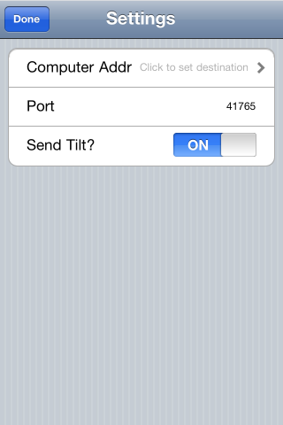
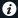
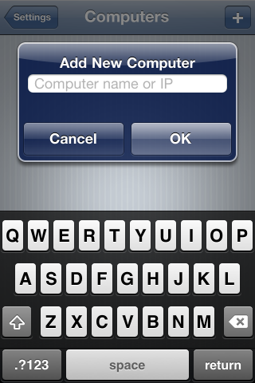
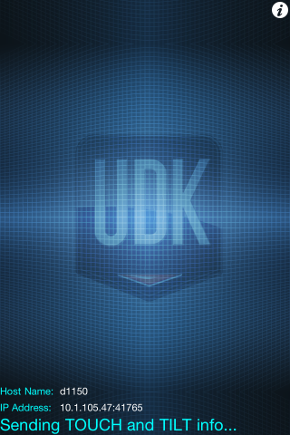
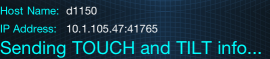
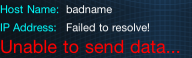
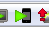

UDK Remote
Overview
UDK Remote is available as a free download on the Apple App Store, for all iOS devices. It's used in conjunction with a Windows machine running Unreal Development Kit for Mobile.
Installation
Using the App Store on your iOS device, search for "UDK Remote" and click on Install.
Alternatively, click here to download it via iTunes, and then sync your iOS device.
(In other words, install it like any other iOS app! :) )
Setup
Network
UDK Remote uses networking to communicate to your PC, so you may need to setup the Wifi on your iOS device to be on the same network as your PC. Contact your network administrator for help with this, if needed.
UDK Remote settings
When you first run UDK Remote, it will take you directly to the settings screen:

(Otherwise, simply click the i button  to get to the settings).
Click on the first setting line to enter the name or address of your PC:

The first time you choose a computer, it will automatically prompt you to enter your PC's network name or IP address. Type in either the computer name (for instance, mycomputer, or mycomputer.company.net) or the IP address of your PC (for instance, 192.168.0.34). Click OK, then either the Settings button at top or the computer name in the list.
At this point, everything is set up, so click on Done at the top to return to the main UDK Remote screen:

If you entered a network name (not an IP address), it will now attempt to resolve the name into an IP address. You can see the results at the bottom left:

If it was unable to find the network name, it will tell you this:

At this point, you will need to go back into settings via the i button, and add a new computer name. On the settings screen, click on the top line again to enter computer selection mode, and then click the + button to add a new computer. You can use Edit to remove old or bad computers.
Note: If you entered an IP address, the app will not attempt to resolve the address to make sure it can connect. UDK Remote uses a connectionless model, and there is currently no indication UDK Remote is able to send data to a PC when using an IP address.
PC setup
For multi-touch and tilt information to be usable on the PC, you should run your UDK game in Mobile Previewer mode. This is done in one of two ways. In Unreal Editor, click on the Mobile Previewer button:

Or, alternatively, you can run the game with -simmobile. This will enable the rendering emulation as well as input emulation. If you want to use normal PC rendering (with Direct3D), you can still accept input from UDK Remote if you run your game with -simmobileinput on the commandline.
Usage
Once you are on the main screen with a valid address set up, and your PC is running in Mobile Emulation mode, simply touch and tilt the device to send the data to the PC. The game should respond to the touch and tilt just as if it was running on an iOS device (how your game uses touch and tilt is up to you of course!)
 Note: The Zoom feature for iOS devices in Settings > General > Accessibility will conflict with UDK Remote for 3 finger controls.
Note: The Zoom feature for iOS devices in Settings > General > Accessibility will conflict with UDK Remote for 3 finger controls.
Important!
You are viewing documentation for the Unreal Development Kit (UDK).
If you are looking for the Unreal Engine 4 documentation, please visit the Unreal Engine 4 Documentation site.